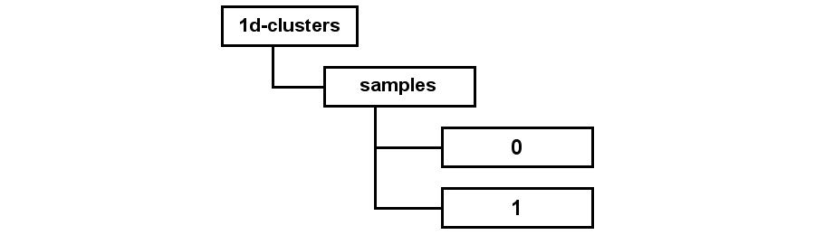

To use the Proximity models, you need to create sets of subgraphs. In the simplest case, one or more of these sets is used to learn (train) the model. You then test the results of that training by applying the model to the remaining set of subgraphs. You can create these sets of subgraphs by sampling a container.
Proximity provides a sampleContainer()
method for creating random samples of existing containers.[2]
You can either create a specified number of samples, or create samples
suitable for cross validation. Because
subgraphs in a container may
contain objects and links that also appear in other subgraphs, the
resulting samples may not satisfy strict independence requirements
imposed by some experimental designs.
Exercise 6.4 illustrates the simplest case of
creating two samples—one for
training and one for
testing.
This section describes the script found in
$PROX_HOME/doc/user/tutorial/examples/sample-1d-clusters.py.
To create the samples, we need to write a script that calls the
sampleContainer() method
on the prox object.
For this example, we
create two samples. Each will be placed in a new container and each
will hold approximately one-half the subgraphs from the original
container. The counts are approximate because the initial container
may not contain an even number of subgraphs.
print "Sampling database..."
prox.sampleContainer("1d-clusters",2,"samples")
This use of the sampleContainer() method
requires three arguments:
containerName-
the container to be sampled
numFolds-
the number of samples to create from this container
sampleName-
the name of the container that holds the sample containers
The sampleContainer() method creates both
a parent container, sampleName, to hold the
samples as well as the sample containers themselves.
The sampleName container is in turn,
contained by the initial containerName container. For
example, the script above creates the following container hierarchy:
|  |
where the 1d-clusters container existed in the database before running the scripts and the samples, 0, and 1 containers were created as a result of running the script.
The sampleContainer() method provides an overload for
creating samples for cross validation. This
overload omits the
sampleName parameter, placing the resulting
samples in either a training or
test container. For example, when
creating samples for 10-fold cross validation, the method partitions
the data into 10 segments and creates 10
training sets, each
containing nine of those segments, and 10 corresponding
test sets
containing the remaining tenth segment.
Exercise 6.4. Creating training and test sets:
This script requires the container created in Exercise 5.7. You must have completed Exercise 5.7 before running the current exercise.
Before beginning, make sure that you are serving the ProxWebKB database using Mserver. Start the Proximity Database Browser if it is not already running.
-
From the Script menu, choose Run Script. Proximity displays the Open dialog.
-
Navigate to the
$PROX_HOME/doc/user/tutorial/examplesdirectory and choosesample-1d-clusters.py. Click Open.Proximity opens a window to show you any output from the script along with a trace of the script execution. Proximity reports:
Status: starting running script: /proximity/doc/user/tutorial/examples/sample-1d-clusters.py Sampling database... Status: finished running script
when the script successfully completes. You can close this window after the script finishes.
-
To verify that the script created the sample containers, click Containers to display the list of containers in the database.
-
Click 1d-clusters. Proximity shows you that 1d-clusters has a child container, samples.
-
Click samples. Proximity displays samples’s child containers, numbered 0 and 1.

The view query link is disabled because this container was created by a script rather than by querying.
Sampling adds an attribute to each of the sampled subgraphs in the initial container indicating which sample they belong to. In this case, subgraphs in 1d-clusters get the new attribute, but corresponding subgraphs in containers 0 and 1 do not. This attribute will be overwritten if the container is re-sampled.